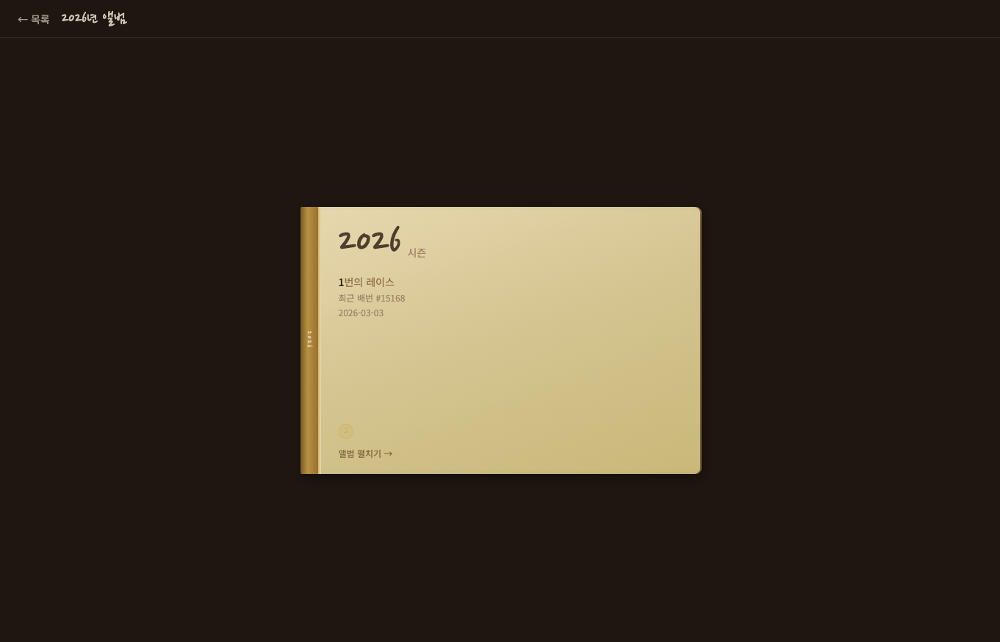
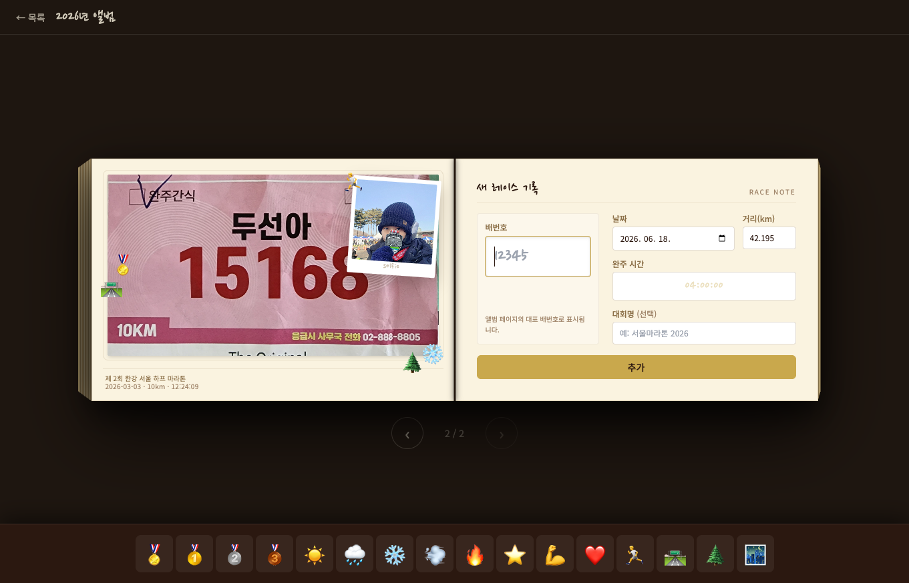
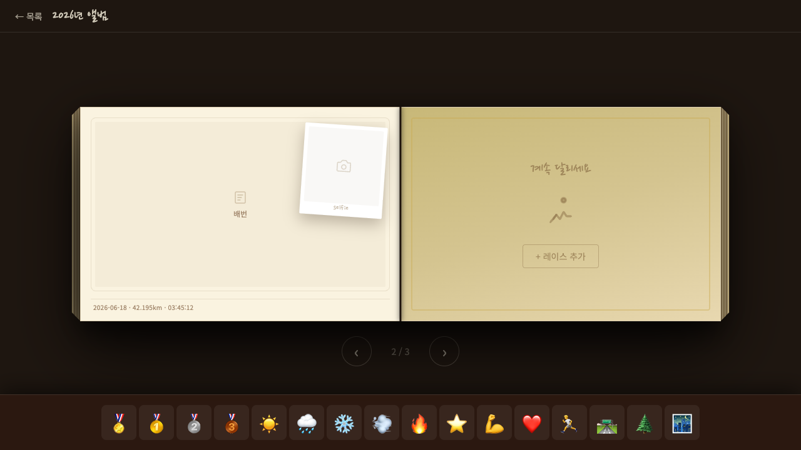

마라톤 앨범 MVP — 3D 책 UI + 드래그 앤 드롭 데코
2026-06-16 킥오프 · 2026-06-19 보고 · PM
배번호(Bib Number)를 촬영하면 자동으로 스티커 페이지가 생성되는 마라톤 앨범 MVP를 3D 책 UI로 Vercel에 배포한다.
| # | 결정 내용 | 분류 |
|---|---|---|
| 1 | 앱 위치: apps/marathon-diary monorepo 신설 — Vite + React + TS + Tailwind |
아키텍처 |
| 2 | 핵심 단위: Bib Number = 레이스 primary key (스티커 페이지 생성 트리거) | PM |
| 3 | 완주증 슬롯 제외 → 완주기록(시간·거리·날짜) 텍스트 입력으로 대체 | 스코프 |
| 4 | 3D 책 UI: react-pageflip (CSS 기반 경량) — 닫힌 책→클릭 오픈, 페이지 전환 사운드 |
FE |
| 5 | 이미지 저장: IndexedDB (Base64 5MB 한계 회피), 레이스·이미지·데코 레이어 분리 | FE |
| 6 | Vercel 정적 배포: apps/marathon-diary/vercel.json SPA fallback |
BE |
| 7 | 배번호 인식: Sprint 1 수동 입력 + 사진 첨부. OCR(Tesseract.js) Sprint 2 이연 | 이연 |
| 8 | UX: 닫힌 책→클릭 열기, 페이지 전환 사운드 (Web Audio API), resize 대응 | UX |
| 9 | 스티커: StampPicker Portal(document.body), 드래그 ghost element, 페이지 밖 드롭→삭제 |
FE |



FE (10)
BE (1)
vercel.json 설정 완료. 실제 배포 후 URL 접근 및 SPA routing 검증 필요.
input[capture=camera] + will-change 최적화 검증 대기.
배포 · QA 완성
manifest.json + 홈 화면 추가 지원OCR · 기능 확장
마라톤 앨범 — Sprint 1 완료